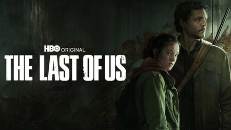
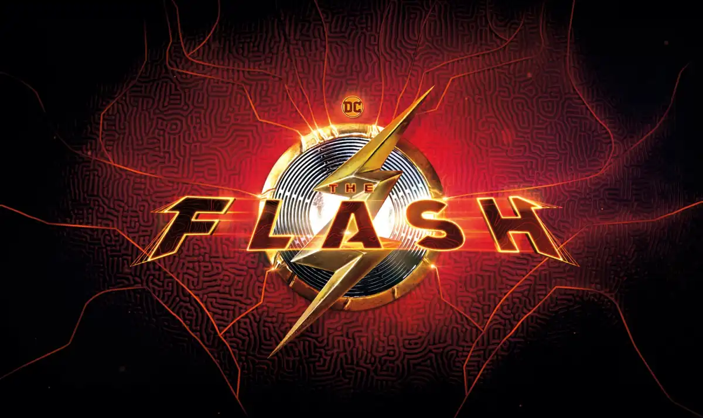
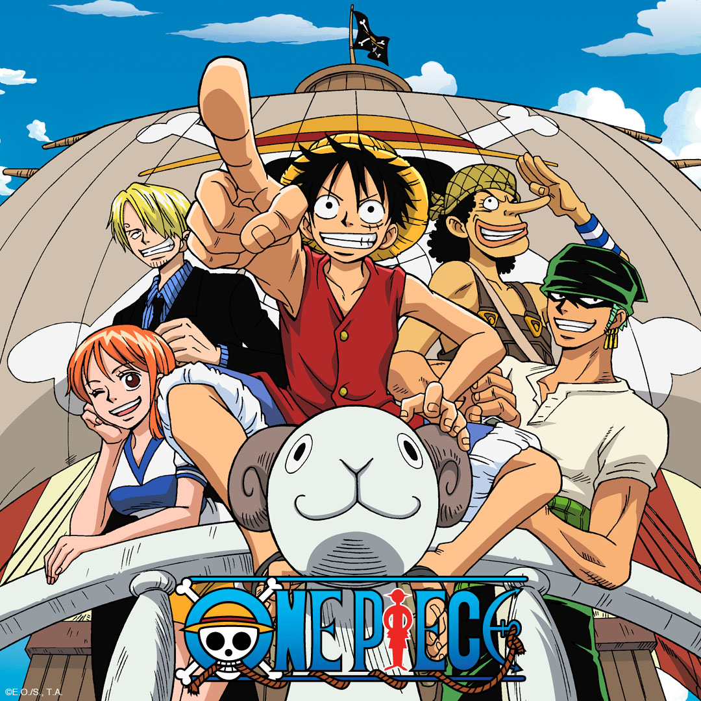

Series
- The Last Of Us 
- Pedro pascal
- Bella Ramsey
- Breaking Bad
- Bryan Cranston
- Anna Guns
- The Flash 
- Caitlin Snow
- Savitar
- The Walking Dead
- Robert Kirkman
- Tony Moore
- One Piece
- Monkey D Luffy
- Zorro Ronoa
- Sanji
El interés de HBO Max por lograr que una adaptación fiel de ‘The Last of Us’, el magnífico título de Naughty Dog, era inquebrantable, y los resultados ya están aquí: pasada la fecha de estreno de la serie el 16 de enero de 2023, seguimos la actualidad semana a semana de la que está siendo una de las series más aclamadas del comienzo del año. A través de los resúmenes de cada episodio, sinopsis oficial, reparto, tráiler y mucho más celebramos la actualidad de 'The Last of Us', una de esas series basadas en videojuegos que dejarán huella.
Actores Relavantes

La serie narra las historias de Walter White, un profesor de química que después de ser diagnosticado de un cáncer pulmonar inoperable termina vendiendo metanfetamina, y de Jesse Pinkman, su exalumno. Breaking Bad y su reparto estuvieron durante cinco años en boca de todos.
Actores Relavantes
La serie sigue a Barry Allen, interpretado por Grant Gustin, un investigador de escenas del crimen que obtiene velocidad sobrehumana, que usa para luchar contra criminales, incluidos otros que también han adquirido habilidades sobrehumanas.
Actores Relavantes

The Walking Dead es una serie de televisión estadounidense de horror postapocalíptico de AMC basada en la serie de cómics homónima de Robert Kirkman, Tony Moore y Charlie Adlard. La serie presenta un gran elenco como supervivientes de un apocalipsis zombi, tratando de mantenerse con vida bajo la amenaza casi constante de ataques de los zombis sin conciencia, coloquialmente conocidos como «caminantes». Sin embargo, con la caída de la humanidad, estos supervivientes también enfrentan conflictos con otros supervivientes que han formado grupos y comunidades con sus propios conjuntos de leyes y morales, lo que a menudo conduce a conflictos hostiles entre las comunidades humanas.
Actores Relavantes
One Piece narra la historia de un joven llamado Monkey D. Luffy, que inspirado por su amigo pirata Shanks, comienza un viaje para alcanzar su sueño, ser el Rey de los piratas, para lo cual deberá encontrar el tesoro One Piece dejado por el anterior rey de los piratas Gol D. Roger.
